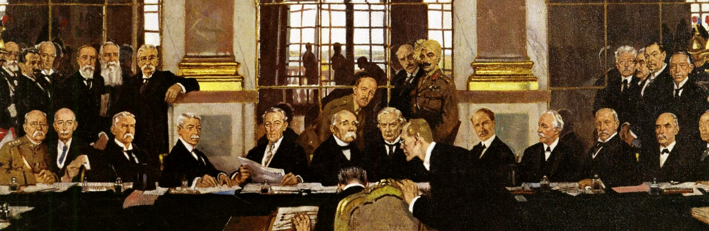
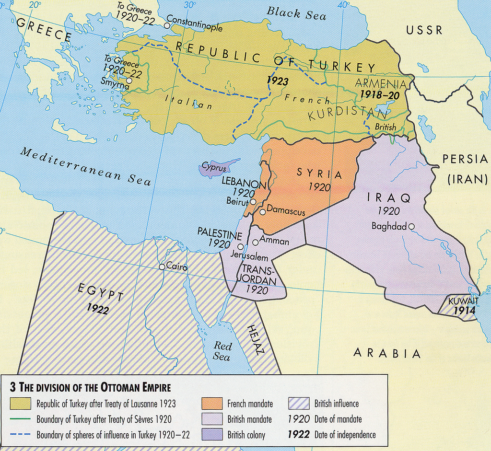
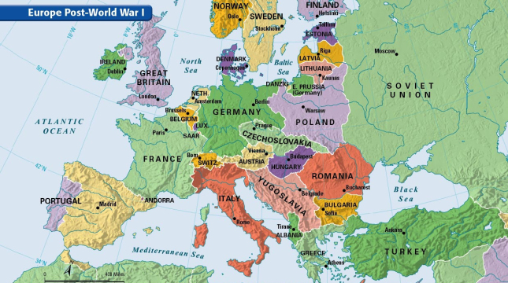

IF YOU CAN SEE THIS TEXT, YOU NEED TO ENABLE JAVASCRIPT FOR MANY FUNCTIONS OF THIS SITE
 One of the largest impacts of the peace after World War 1 was the creation of new sovereign nations. The treaty of Versailles created Finland, Latvia, Lithuania, Estonia and Poland from the Russian Empire, these nations currently exist today, but during the era of the USSR they would join the Russians again. The collapse of Austria Hungary created Czechoslovakia, Yugoslavia, Austria, and Hungary.
The Balkans would still be wrestling with national identities, with the same for Czechoslovakia. Due to the various ethnic groups in these countries, Yugoslavia and Czechoslovakia are now multiple countries, and only in the last 30 years have these areas stabilized. Romania was a country that gained a lot of new territory in the war, from both the Russian Empire and the Austro-Hungarian Empire. Italy was not given all of the land it was promised from the Allies, while France regained the Alsace-Lorraine. Though these border changes were an overall positive, it did create future problems for the Germans who lost their colonies in Africa, but also land to their east in the creation of Poland.
 In the Middle East, the fall of the Ottoman Empire led to the creation of British Palestine, Transjordan, and Iraq. It also led to the creation of French Syria and French Lebanon. This was due to the Sykes-Picot Agreement which partitioned the Mesopotamia between the victors of WWI. It would be the first time that Europeans controlled the holy city of Jerusalem since the 1200’s. Jerusalem was home of many religious groups, and the British Balfour Declaration stated in the creation of a Jewish National state in Palestine. Even though Israel would not exist until after WWII, many Jews would move back to their religious homeland under British control, which would slowly cause problem with the native Palestinians.